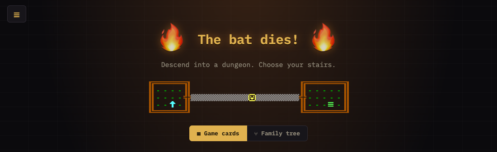
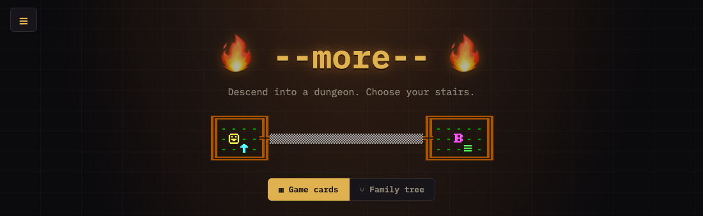

Nova Rogue 1
Completion ▰▰▰▰▰▰▱▱▱▱ 60% · five levels and a win, meant to grow
Nova Rogue is a tiny roguelike that lives in the header of my roguelikes page, where it replaced an ASCII walk animation. The in-game title calls it "Nova Rogue V1". The host page is a collection of classic roguelikes you can play in the browser; this is only the thing at the top of it.
Every level is the same map: two small rooms and a corridor between them. What changes is what happens in it. You fight a bat, meet a pale double of yourself, answer a knight's three questions on a bridge over a gorge, throw things across a chasm at a lever, and finally break a machine that keeps spitting out slimes.
It is all one file, minirogue.js, about a thousand lines. It is written so that a new level is just a new entry in a list.
Features
- Five hand-made levels on one shared two-rooms-and-a-corridor map, with stairs down and (sometimes) up; levels you leave are remembered as they were
- Bump combat with 10 hp, damage ranges, a short sword (2-4), leather armour (takes 1 off a hit) and a useless sandal; hp is restored once per new depth
- Monsters with their own behaviour: an erratic bat, a snake, a random-walking rat, armour-piercing slimes, a slime machine, and a knight
- The knight asks your name, your quest and your favourite colour, which has to be an HTML hex colour
- Hidden levers you find by searching (
s), visible levers you pull by walking into them or hitting them with a thrown item - Chasm tiles with a fall animation, a bridge that extends or retracts plank by plank, items that fall into the gorge
- An inventory sidebar (
i) with Angband symbols, colours and real stats; equip, throw, drop; throwing with keys or aimed with the mouse - Two themes: Unix Rogue (plain ASCII) and Epyx PC Rogue (CP437 glyphs, CGA colours), picked at random per load
- A message log behind the page title, a Rogue-style status line in the subtitle, and a tombstone when you die
- Progress reported to the page: going deeper and winning unlock game families in the roguelikes menu
Under the hood
The file starts with a rule for myself, because the messages share one line with the page title. From minirogue.js:
// GOLDEN RULE: no log message longer than roughly 5 words. Messages share one line
// in the title; say it short ("Thunk! Bridge extends."), never narrate.The knight's replies to a wrong colour, chosen to fit that one line:
wrong: [
'Hex, peasant!',
'Not a colour.',
'Wrong. #RRGGBB!',
'Nice try.',
'Blue? #0000ff!',
'Speak CSS!',
],Monsters are self-contained entries with optional hooks. The bat is Rogue's bat:
bat: { hp: 4, dmg: [1, 2], glyph: { unix: 'B', epyx: 'B' },
act(g, m) { // flies erratically, as in Rogue: every third turn a random flap
m.turns = (m.turns || 0) + 1;
if (m.turns % 3 === 0) return g.wander(m);
return g.adjacent(m) ? g.hurt(m, this.dmg) : g.chase(m);
} },Levers fire named events, and any lever can fire any event. The tombstone is the same height as the map "so the header does not jump", and the stairs on the last level just say "Under construction.", so a new level is playable the moment it is appended.
Ideas & inspirations
Rogue is everywhere: the vi keys, s to search, "no diagonal doors", the erratic bat, the two themes after Unix Rogue and the Epyx PC version. Items show up in the inventory with Angband's symbols and colours. The knight on the bridge and his three questions are Monty Python's bridge keeper, with the colour question turned into a CSS joke.
The knight's hints, once you get past him, are the closest thing to a manual: "Press --more--", "Subtitles hide secrets", "'t' is for throwing" and "'g' is for graph.. text..".
Where it started, where it ended
It started on 2026-09-26 as a playable replacement for an ASCII walk animation in the header: one level, then a second with a hidden switch and a pale double that says "So it begins..", then the bridge and the knight. Three days later it had an inventory, items with real stats, levers as events, chasms, five level transitions that I cut back down to one, and on 2026-09-29 levels 4 and 5 and a proper combat scale.
It ended as a five-level game with a win: break the slime machine. That win, and every new depth, now unlocks parts of the roguelikes site.
State of the repo
Last change was 2026-09-30 (the knight's hints). The code is clean and documented; the header comment explains how to add levels, monsters and items. Some things are marked as provisional: falling into a chasm is "For now: death", and an item thrown into a chasm is "For now: it is gone". The last level's stairs down still say "Under construction."
The structure says it was meant to keep growing one level at a time. As a five-level header toy it works; as the thing its own comments describe, I'd put it a bit past halfway.
Is it a real game?
Short complete game. There is a lose state (you die, get a tombstone, and any key starts over) and a win state (the slime machine bursts on level 5). After that there is nothing more to do. A run takes five to fifteen minutes, longer if you don't know about searching for levers or throwing things across the gorge.
Controls
- Arrow keys, h j k l, y u b n (diagonals), Home / PageUp / End / PageDown (diagonals): move or attack
- .: wait a turn
- s: search (finds hidden levers); also walks away from a question
- i: inventory; inside it ↑ / ↓, a letter, Enter or Space to pick, then equip, throw or drop
- t: throw: pick an item, then a direction (arrows, vi keys or numpad 1-9); any other key or Esc puts it away
- g: switch between the Unix and Epyx themes
- Enter / Esc: answer or leave the knight's prompt; y / n for yes/no questions
- Mouse: click a tile to step towards it, click yourself to search, click a tile to aim a throw
- After death, any key starts a new run
- On the host page: F5 unlocks every game family, F10 forgets all stored progress (debug keys)
History
- 2026-09-26 Playable mini-roguelike replaces the ASCII walk animation in the header
- 2026-09-26 Epyx PC Rogue theme; level 2 with hidden switch, snake and a pale double
- 2026-09-26 Message log behind the title, Rogue-style status line in the subtitle
- 2026-09-26 Level 3: the bridge, the knight's questions, a hidden lever throws him into the gorge
- 2026-09-29 Inventory sidebar, Angband-style items, item menus, level 4 retracted bridge
- 2026-09-29 Levers as named events, animated throws, the five-word golden rule
- 2026-09-29 Chasm tiles and falling, blue knight, speech lines
- 2026-09-29 Five level transitions, cut down to a single title card
- 2026-09-29 Mouse-aimed throws; stairs up on level 3, rat on level 4, slime machine on level 5
- 2026-09-29 New combat scale (10 hp, damage ranges), healing only on new depths
- 2026-09-29 Progress unlocks game families on the page
- 2026-09-30 The slime machine bursts before the win;
*marks equipped items,tthrows, shuffled knight hints, theme moves tog
Screenshots



Latest updates
- 2026-09-30 Single quotes in the knight's hints
- 2026-09-30 Knight hint for g
- 2026-09-30 Theme switch on g
- 2026-09-30 * marks equipped items, t throws, shuffled knight hints
- 2026-09-30 The slime machine bursts before the win
- 2026-09-26 First version in the header